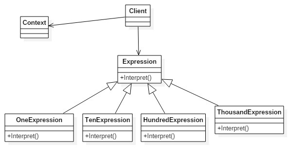

Interpreter
Definition
Given a language, define a representation for its grammar along with an interpreter that uses the representation to interpret sentences in the language

Frequency of use
Our UML class diagram
Participants
- AbstractExpression (Expression)
- declares an interface for executing an operation
- TerminalExpression (ThousandExpression, HundredExpression, TenExpression, OneExpression)
- implements an Interpret operation associated with terminal symbols in the grammar.
- an instance is required for every terminal symbol in the sentence.
- NonterminalExpression (not used)
- one such class is required for every rule R ::= R1R2...Rn in the grammar
- maintains instance variables of type AbstractExpression for each of the symbols R1 through Rn.
- implements an Interpret operation for nonterminal symbols in the grammar. Interpret typically calls itself recursively on the variables representing R1 through Rn.
- Context (Context)
- contains information that is global to the interpreter
- Client (InterpreterApp)
- builds (or is given) an abstract syntax tree representing a particular sentence in the language that the grammar defines. The abstract syntax tree is assembled from instances of the NonterminalExpression and TerminalExpression classes
- invokes the Interpret operation